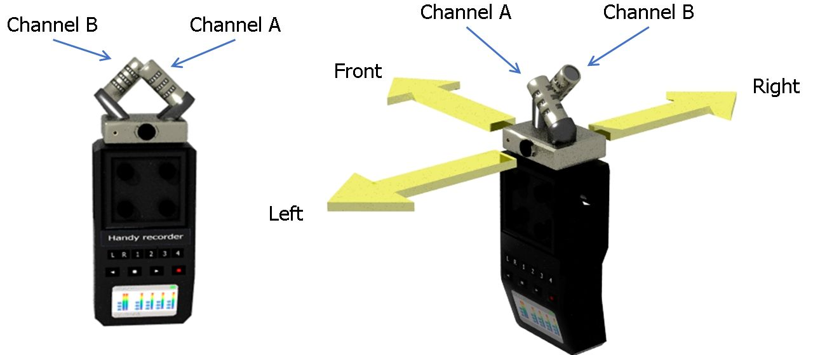
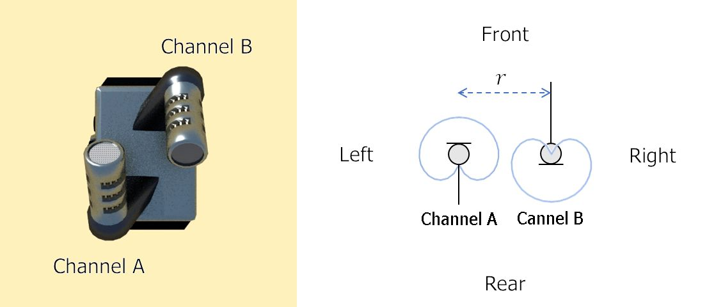
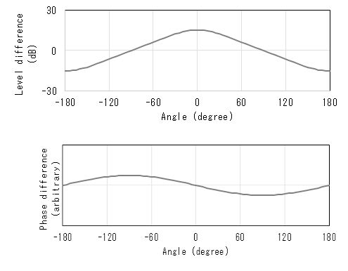
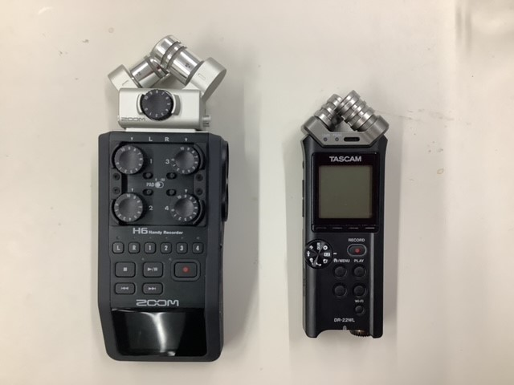
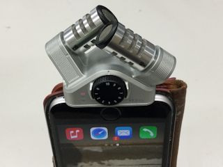
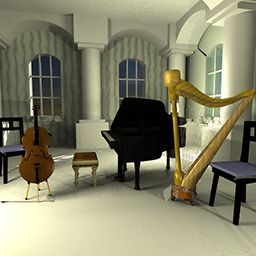
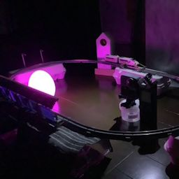
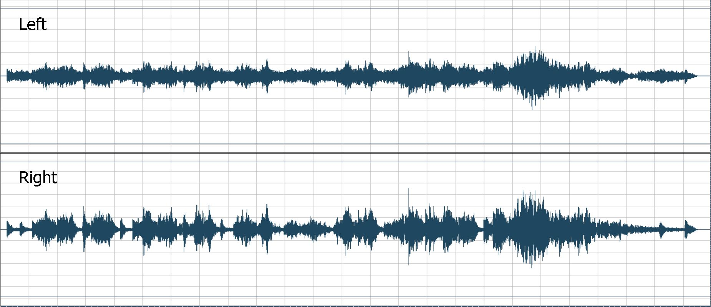
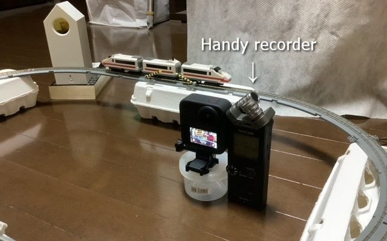
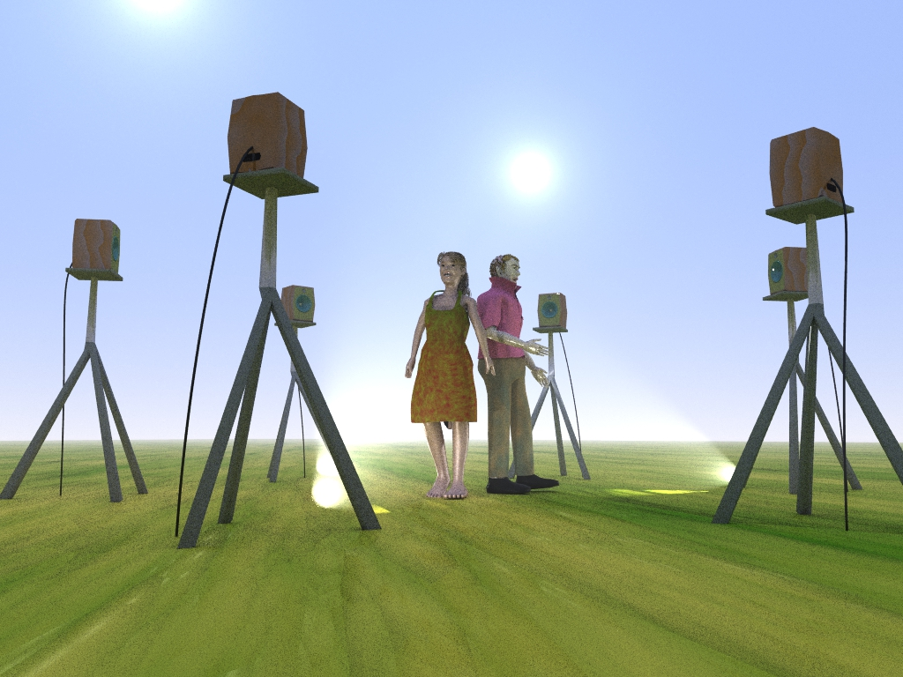

Dual microphone system for
2D panoramic sound
わずか 2 つのマイクロフォンで
360°パノラミックサウンド
録音を実現！
（2 次元ステレオ）
はじめに
2 次元の空間情報を得るには，原理的に 3 点計測が必須です。しかし一般的な録音機器はステレオ 2 チャンネルなので， 同時に 3 つ以上のマイクロフォンを使うのは困難です。
そこで，わずか 2 つのマイクロフォンで 360°のパノラミックサウンドを録音する技術を開発しました。 これは古典的なステレオのデータフォーマットに 2 次元の空間音響を記録する技術である，とも言えます。 ここでは，本技術の要点を紹介します。
特徴
Figure 1 に示すような 2 チャンネルのマイクロフォンシステムを使用します。 使用するマイクロフォンはいずれもカージオイド（単一指向性）マイクロフォンです。 これらのマイクロフォンをチャンネル A，チャンネル B とします。
2 次元の情報を得るには 3 点計測が必須ですが，ひとつのカージオイドマイクロフォンは実質的に 2 点計測なので， 2 つのマイクロフォンでも 2 次元の空間情報が得られるのです。

Fig. 1 Dual microphone system
A stereo handy recorder with the dual microhone system (Left) and its orientation (Right) are shown.
The microphone system consists of a pair of cardioid microphones.
2 つのマイクロフォンは水平面内で反対方向に向けられています。上面図（Fig.2）からわかるように，チャンネル A が前方を向いていればチャンネル B は後方を向いています。どちらもカージオイドマイクロフォンなので周波数 bin ごとに前後方向に関する一次元の空間情報に依存したチャンネル間レベル差が生まれます。 例えば，音が前方から来る場合，チャンネル A のほうがレベルが大きくなります。

Fig. 2 Top view of the system
A top view (Left) and a schematic illustration (Right) of the system are shown.
また，2 つのマイクロフォンは距離 r を隔てて左右に並んでいます。このため，周波数 bin ごとに左右方向にかかわる一次元の空間情報に依存したチャンネル間位相差が生まれます。
方向に対するチャンネル間レベル差とチャンネル間位相差の理論値を Fig.3 に示します。正面方向（前方）を 0°としています。レベル差は前後方向に，位相差は左右方向にそれぞれ依存していることがわかります。レベル差と位相差の特性が 90°ずれている（直交している）ことにより，互いに直交する 2 次元の空間情報を扱えるようになります。

Fig. 3 Inter-channel differences
Theoretical inter-channel level difference (Top) and
ideal inter-channel phase difference (Bottom) are plotted as a function of direction.
2 チャンネルしかないステレオ信号では，左右方向に関する一次元の空間情報しか扱えないと思われがちですが， 本稿に示すとおり，周波数 bin ごとに，前後方向に関する空間情報はチャンネル間レベル差として， 左右方向に関する空間情報はチャンネル間位相差として，ひとつのステレオ信号に記録できるわけです。 これらを合わせることにより，左右だけでなく前後も含めた 2 次元， すなわち水平面 360°の空間音響が扱えることになります。
Figure 4 に示す市販のハンディレコーダ'ZOOM H6' と 'TASCAM DR-22WL' が本目的に利用できることを確認済みです。 iOS 用のステレオマイクロフォン'ZOOM iQ6' (Fig. 5) を利用してリアルタイムに録音再生するアプリ （研究用途のため非公開）もすでに開発しています。
本手法の詳細はdualmic_sys.pdf (447 KiB)をご覧ください。

Fig. 4 Handy recorders with the microphone system
Each of ZOOM H6 (Left) and TASCAM DR-22WL (Right) has the stereo microphone system.

Fig. 5 Stereo microphone system (ZOOM iQ6) attached to a smartphone.
2 次元ステレオのサンプル
以下のデモは，'AudioWorklet' がサポートされていないブラウザや端末では再生できません。
まず以下のデモを試聴してください（ステレオヘッドフォンを使用してください）。 データの読み込みに時間がかかる場合があります。 画面の表示が 'Loading data. Wait for a moment' から 'Click to start' または 'Tap to start' に変わるまでお待ちください。
'Click to start' または 'Tap to start' が表示されたら，画像をクリック（タップ）して再生を始めてください。
再生中，PC ではマウスポインタを左右に動かすことでパンニングを制御できます。
|
 cygne2d |
* * |
 at11 |
上のサンプルで再生されるのは，それぞれ'cygne2d.wav'と'at11.wav'という WAV ファイルの音です。 Figure 6，に示すとおり使用している WAV ファイルは 2 チャンネルのごく一般的なステレオファイルですが， これらのデモサンプルでは 360°のパノラミックサウンドとして聞くことができます。 パンニング制御に加えて画面中央下の 'BEAMFORMER' ボタンにより 水平面内の任意の方向に指向性ビームを作ることが可能です。

Fig. 6 PCM data streams in 'cygne2d.wav.'
It can be seen that the file has only 2 tracks (Left and Right).
デモサウンド'at11.wav'は，Fig. 7 に示すとおり，ステレオハンディレコーダ `TASCAM DR-22WL' で収録したものです。

Fig. 7 Handy recorder placed in the scene
Stereo handy recorder `TASCAM DR-22WL' was placed in the scene to capture 2D panoramic sound.
マルチスピーカ再生
シンプルなステレオオーディオデータで 2 次元の空間情報が扱えるので，ステレオ信号から パノラミックサウンドが再現でき，ヘッドフォンをとおして再生できるだけでなく， Fig. 8 に示すようなマルチスピーカシステムでの再生も可能です。古典的なステレオ信号だけで空間音響を操れるので，'5.1 サラウンド' や 'アンビソニック' といった専用のフォーマットは一切不要です。

Fig.8 Panoramic sound spot system
2D panoramic sound can be generated from the stereo audio data and
reproduced by the multi-loudspeaker system.
2 次元ステレオ録音体験
ハンディレコーダ 'ZOOM H6' あるいは 'TASCAM DR-22WL' またはステレオマイクロフォンシステム 'ZOOM iQ6' をお持ちなら， 録音体験ページにて 2 次元ステレオ録音が可能です。
マイクロフォンシステムの向きに注意してください。 Fig. 1 に示すようにマイクロフォンシステムは上向きとし， Fig. 2 のように 2 つのマイクロフォンは左右にならべてください。
さらに，以下のページもお試しいただけます。
- 'ZOOM H6＋ZOOM XYH-6 をお持ちの方は， Record with ZOOM H6
- ZOOM iQ6 をお持ちの方は，Record with ZOOM iQ6
- TASCAM DR-22WL をお持ちの方は，Record with TASCAM DR-22WL
{kind=link}
{kind=link}
{kind=link}
これらのページではオープンソースの JavaScript ファイル 'PanoSterec.js' が使われています。 'PanoSterec.js' の GitHub リポジトリは こちらです。
Navigation
- 同志社大学 脳神経行動工学研究室
- 全天球ステレオ
- Technical note
- For further information, see dualmic_sys.pdf (455 KiB).
- 問い合わせ

Copyright© 2024 Doshisha Univ.